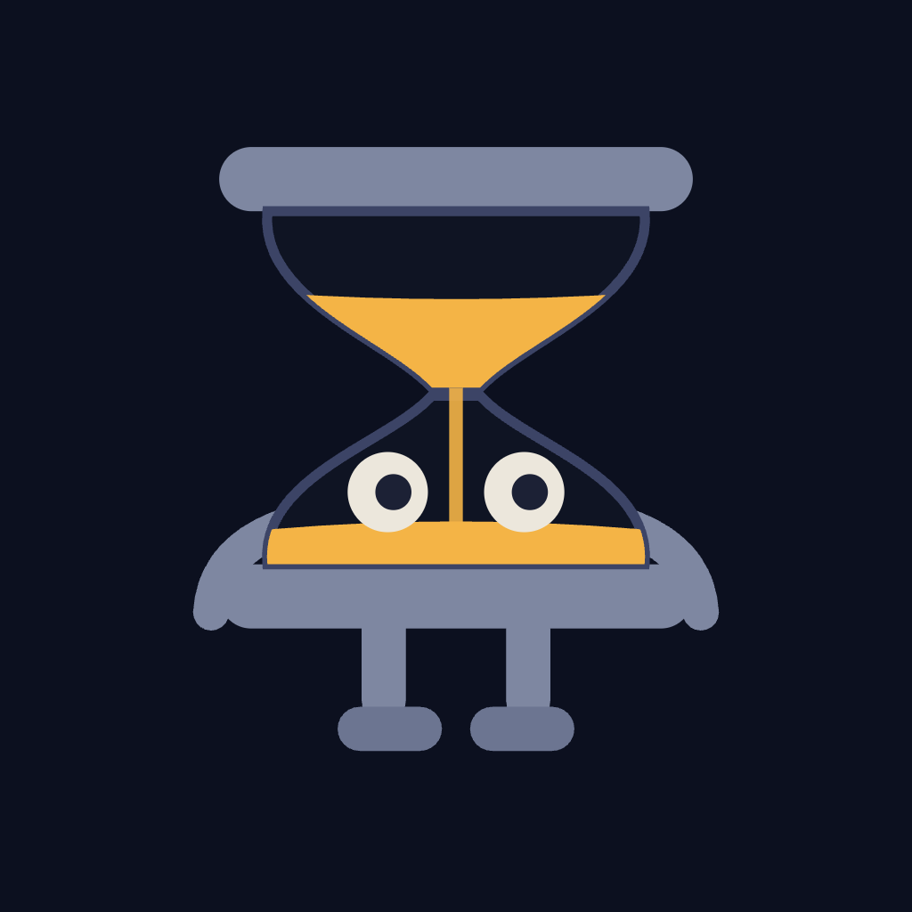
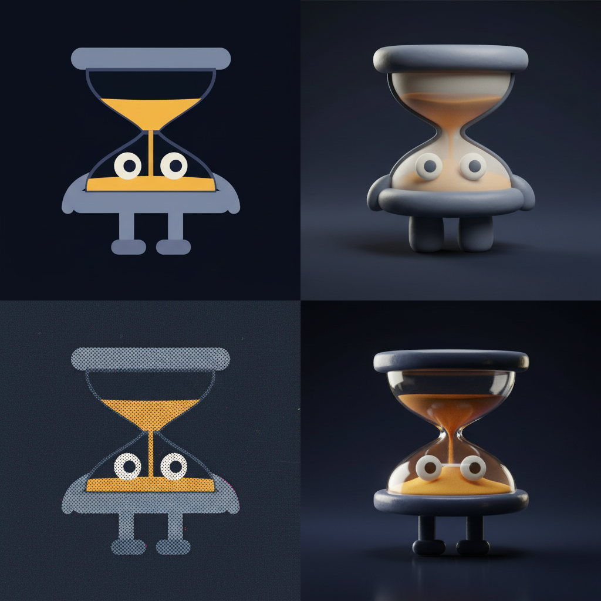

Chronos · mascot · Tock · style picker
The character is locked — this is take B, the toy hourglass. Every panel below is the same hand-built SVG passed to fal.ai as a reference image, so the silhouette, proportions and palette are held and only the rendering style changes. Tell me a quadrant and I'll push that direction further.

This is the real asset. Whatever style you pick, the shipped logo.svg / favicon.svg stay clean vector like this — generated art is for the landing hero and the OG card.

1234| # | Style | What it buys you | What it costs you |
|---|---|---|---|
| 1 | Flat vector top-left |
Identical to the shipped SVG. One asset for everything — nav, favicon, OG card, 404 — and it animates in CSS. | Least "special". It is the thing you already have. |
| 2 | Matte 3D toy top-right |
Warmest and most characterful. Reads as a physical object you could hold. Strongest hero image. | Cannot be the favicon — you keep two assets in sync, vector mark + rendered hero. |
| 3 | Risograph print bottom-left |
The most "own stamp" of the four — grain and misregistration read as a made thing, not a SaaS template. Sits on the dawn/paper ground. | Texture fights the dark night ground; really wants the paper half of the page. |
| 4 | Glossy glass bottom-right |
Most literal — actual glass, actual glowing sand. The amber genuinely emits light, which suits the night shift. | Least mascot, most product-render. The limbs nearly disappear and the face gets lost at small sizes. |
One number, 1–4 — or "2 but on the paper ground", that kind of thing. Then I generate the finals in that style: the hero pose, the 03:07 asking pose, and a landing / OG illustration, and hand-build the final mascot.svg, logo.svg and favicon.svg to match.